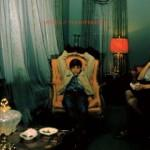

Music Reviews
-
Lucero 1372 Overton Park
On their major label debut, these Southern Punks use some old tricks to tell some new stories.
Daniel Rivera reviews... -

Dinowalrus %
Dinowalrus is what happens when the economy falls.
Sean Caldwell reviews... -

Tindersticks Falling Down a Mountain
Tindersticks defy expectations and show that you can teach an old dog new tricks on their first album for 4AD
Joe Rivers reviews... -
Eels End Times
E's had his heart busted again.
Daniel Dylan Wray reviews... -

Surfer Blood Astro Coast
After a few impressive showings to work up the hype machine, Surfer Blood comes to shore with a middling debut effort that is just too far-reaching for its own good.
Juan Edgardo Rodriguez invites you to play six degrees... -

Spoon Transference
Spoon enter the new decade with their most experimental album yet and their best since 2002's Kill The Moonlight.
Andrew Baer thinks Transference was more than worth the trouble... -

Animal Collective Fall Be Kind EP
With its latest set of almost-but-not-quite pop gems, the Collective reaffirms the passion of jam band-lovers everywhere.
Ryan Faughnder reviews -

OK Go Of The Blue Colour Of The Sky
An open letter in response to an album of murky tone and questionable production from an otherwise reliable listener-friendly pop band.
Nate Adams wonders why he and OK Go never talk anymore... -
The Magnetic Fields Realism
Stephen Merritt and The Magnetic Fields finish off their so-called "no-synth" trilogy with an arresting effort that finds ways to both impress and confound.
Daniel Rivera reviews... -

Ke$ha Animal
Listening to Ke$ha's hyper-sexual, misanthropic disco debut Animal is a lot like watching an insecure college freshman try to heal deep emotional scarring with alcohol and promiscuity.
Nate Adams pulls his dick out on demand at the club all the time...